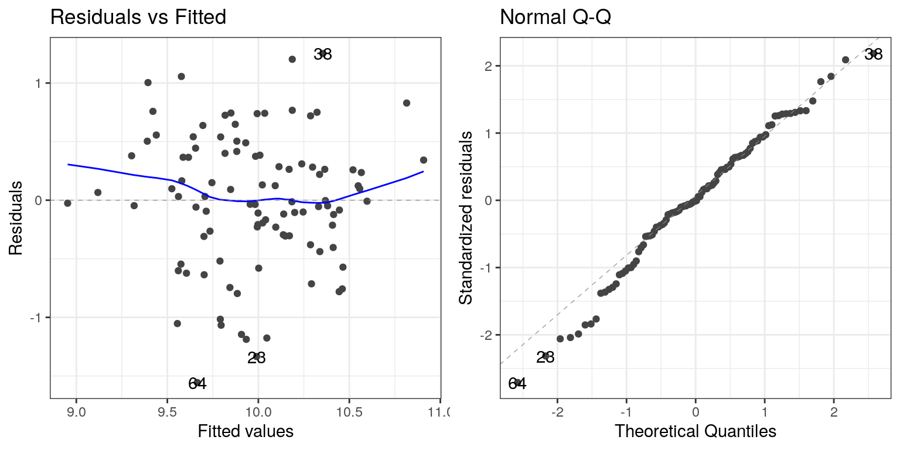
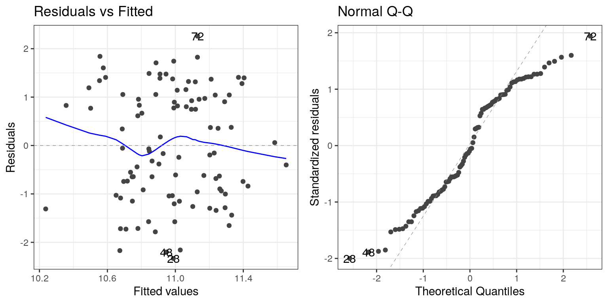

Chapter 14 The General Linear Model in R
14.1 Linear regression (Section ??)
To perform linear regression in R, we use the lm() function. Let’s generate some data and use this function to compute the linear regression solution.
npoints <- 100
intercept = 10
# slope of X/Y relationship
slope=0.5
# this lets us control the strength of the relationship
# by varying the amount of noise added to the y variable
noise_sd = 0.6
regression_data <- tibble(x = rnorm(npoints)) %>%
mutate(y = x*slope + rnorm(npoints)*noise_sd + intercept)
ggplot(regression_data,aes(x,y)) +
geom_point()
We can then apply lm() to these data:
##
## Call:
## lm(formula = y ~ x, data = regression_data)
##
## Residuals:
## Min 1Q Median 3Q Max
## -1.55632 -0.30424 -0.00587 0.38039 1.25219
##
## Coefficients:
## Estimate Std. Error t value Pr(>|t|)
## (Intercept) 9.97610 0.05796 172.122 < 2e-16 ***
## x 0.37246 0.05862 6.353 6.65e-09 ***
## ---
## Signif. codes: 0 '***' 0.001 '**' 0.01 '*' 0.05 '.' 0.1 ' ' 1
##
## Residual standard error: 0.5795 on 98 degrees of freedom
## Multiple R-squared: 0.2917, Adjusted R-squared: 0.2845
## F-statistic: 40.36 on 1 and 98 DF, p-value: 6.646e-09We should see three things in the lm() results:
- The estimate of the Intercept in the model should be very close to the intercept that we specified
- The estimate for the x parameter should be very close to the slope that we specified
- The residual standard error should be roughly similar to the noise standard deviation that we specified
14.2 Model criticism and diagnostics (Section ??)
Once we have fitted the model, we want to look at some diagnostics to determine whether the model is actually fitting properly. We can do this using the autoplot() function from the ggfortify package.

The left panel in this plot shows the relationship between the predicted (or “fitted”) values and the residuals. We would like to make sure that there is no clear relationship between these two (as we will see below). The right panel shows a Q-Q plot, which helps us assess whether the residuals from the model are normally distributed. In this case, they look reasonably normal, as the points don’t differ too much from the unit line.
14.3 Examples of problematic model fit
Let’s say that there was another variable at play in this dataset, which we were not aware of. This variable causes some of the cases to have much larger values than others, in a way that is unrelated to the X variable. We play a trick here using the seq() function to create a sequence from zero to one, and then threshold those 0.5 (in order to obtain half of the values as zero and the other half as one) and then multiply by the desired effect size:
effsize=2
regression_data <- regression_data %>%
mutate(y2=y + effsize*(seq(1/npoints,1,1/npoints)>0.5))
lm_result2 <- lm(y2 ~ x, data=regression_data)
summary(lm_result2)##
## Call:
## lm(formula = y2 ~ x, data = regression_data)
##
## Residuals:
## Min 1Q Median 3Q Max
## -2.33243 -0.96887 -0.09385 1.04213 2.25913
##
## Coefficients:
## Estimate Std. Error t value Pr(>|t|)
## (Intercept) 10.9778 0.1172 93.646 <2e-16 ***
## x 0.2696 0.1186 2.273 0.0252 *
## ---
## Signif. codes: 0 '***' 0.001 '**' 0.01 '*' 0.05 '.' 0.1 ' ' 1
##
## Residual standard error: 1.172 on 98 degrees of freedom
## Multiple R-squared: 0.0501, Adjusted R-squared: 0.04041
## F-statistic: 5.169 on 1 and 98 DF, p-value: 0.02518One thing you should notice is that the model now fits overall much worse; the R-squared is about half of what it was in the previous model, which reflects the fact that more variability was added to the data, but it wasn’t accounted for in the model. Let’s see if our diagnostic reports can give us any insight:

The residual versus fitted graph doesn’t give us much insight, but we see from the Q-Q plot that the residuals are diverging quite a bit from the unit line.
Let’s look at another potential problem, in which the y variable is nonlinearly related to the X variable. We can create these data by squaring the X variable when we generate the Y variable:
effsize=2
regression_data <- regression_data %>%
mutate(y3 = (x**2)*slope + rnorm(npoints)*noise_sd + intercept)
lm_result3 <- lm(y3 ~ x, data=regression_data)
summary(lm_result3)##
## Call:
## lm(formula = y3 ~ x, data = regression_data)
##
## Residuals:
## Min 1Q Median 3Q Max
## -1.6100 -0.5679 -0.0649 0.3587 3.2662
##
## Coefficients:
## Estimate Std. Error t value Pr(>|t|)
## (Intercept) 10.55467 0.08439 125.073 <2e-16 ***
## x -0.04189 0.08536 -0.491 0.625
## ---
## Signif. codes: 0 '***' 0.001 '**' 0.01 '*' 0.05 '.' 0.1 ' ' 1
##
## Residual standard error: 0.8438 on 98 degrees of freedom
## Multiple R-squared: 0.002452, Adjusted R-squared: -0.007727
## F-statistic: 0.2409 on 1 and 98 DF, p-value: 0.6247Now we see that there is no significant linear relationship between \(X^2\) and Y/ But if we look at the residuals the problem with the model becomes clear:

In this case we can see the clearly nonlinear relationship between the predicted and residual values, as well as the clear lack of normality in the residuals.
As we noted in the previous chapter, the “linear” in the general linear model doesn’t refer to the shape of the response, but instead refers to the fact that model is linear in its parameters — that is, the predictors in the model only get multiplied the parameters (e.g., rather than being raised to a power of the parameter). Here is how we would build a model that could account for the nonlinear relationship:
# create x^2 variable
regression_data <- regression_data %>%
mutate(x_squared = x**2)
lm_result4 <- lm(y3 ~ x + x_squared, data=regression_data)
summary(lm_result4)##
## Call:
## lm(formula = y3 ~ x + x_squared, data = regression_data)
##
## Residuals:
## Min 1Q Median 3Q Max
## -1.41009 -0.37915 -0.00483 0.39079 1.44368
##
## Coefficients:
## Estimate Std. Error t value Pr(>|t|)
## (Intercept) 10.10875 0.07387 136.836 <2e-16 ***
## x -0.01178 0.05998 -0.196 0.845
## x_squared 0.45569 0.04513 10.098 <2e-16 ***
## ---
## Signif. codes: 0 '***' 0.001 '**' 0.01 '*' 0.05 '.' 0.1 ' ' 1
##
## Residual standard error: 0.5922 on 97 degrees of freedom
## Multiple R-squared: 0.5137, Adjusted R-squared: 0.5037
## F-statistic: 51.23 on 2 and 97 DF, p-value: 6.536e-16Now we see that the effect of \(X^2\) is significant, and if we look at the residual plot we should see that things look much better:
 Not perfect, but much better than before!
Not perfect, but much better than before!
14.4 Extending regression to binary outcomes.
Let’s say that we have a blood test (which is often referred to as a biomarker) and we want to know whether it predicts who is going to have a heart attack within the next year. We will generate a synthetic dataset for a population that is at very high risk for a heart attack in the next year.
# sample size
npatients=1000
# probability of heart attack
p_heartattack = 0.5
# true relation to biomarker
true_effect <- 0.6
# assume biomarker is normally distributed
disease_df <- tibble(biomarker=rnorm(npatients))
# generate another variable that reflects risk for
# heart attack, which is related to the biomarker
disease_df <- disease_df %>%
mutate(risk = biomarker*true_effect + rnorm(npatients))
# create another variable that shows who has a
# heart attack, based on the risk variable
disease_df <- disease_df %>%
mutate(
heartattack = risk > quantile(disease_df$risk,
1-p_heartattack))
glimpse(disease_df)## Observations: 1,000
## Variables: 3
## $ biomarker <dbl> 1.1512317, 0.6753651, 1.2141696, -0.7…
## $ risk <dbl> 1.05356169, -0.52889832, 0.67528209, …
## $ heartattack <lgl> TRUE, FALSE, TRUE, FALSE, FALSE, TRUE…Now we would like to build a model that allows us to predict who will have a heart attack from these data. However, you may have noticed that the heartattack variable is a binary variable; because linear regression assumes that the residuals from the model will be normally distributed, and the binary nature of the data will violate this, we instead need to use a different kind of model, known as a logistic regression model, which is built to deal with binary outcomes. We can fit this model using the glm() function:
##
## Call:
## glm(formula = heartattack ~ biomarker, family = binomial(), data = disease_df)
##
## Deviance Residuals:
## Min 1Q Median 3Q Max
## -2.13007 -1.01501 0.03054 1.00492 2.13191
##
## Coefficients:
## Estimate Std. Error z value Pr(>|z|)
## (Intercept) -0.004117 0.069479 -0.059 0.953
## biomarker 0.996366 0.083418 11.944 <2e-16 ***
## ---
## Signif. codes: 0 '***' 0.001 '**' 0.01 '*' 0.05 '.' 0.1 ' ' 1
##
## (Dispersion parameter for binomial family taken to be 1)
##
## Null deviance: 1386.3 on 999 degrees of freedom
## Residual deviance: 1201.4 on 998 degrees of freedom
## AIC: 1205.4
##
## Number of Fisher Scoring iterations: 3This looks very similar to the output from the lm() function, and it shows us that there is a significant relationship between the biomarker and heart attacks. The model provides us with a predicted probability that each individual will have a heart attack; if this is greater than 0.5, then that means that the model predicts that the individual is more likely than not to have a heart attack.
We can start by simply comparing those predictions to the actual outcomes.
# add predictions to data frame
disease_df <- disease_df %>%
mutate(prediction = glm_result$fitted.values>0.5,
heartattack = heartattack)
# create table comparing predicted to actual outcomes
CrossTable(disease_df$prediction,
disease_df$heartattack,
prop.t=FALSE,
prop.r=FALSE,
prop.chisq=FALSE)##
##
## Cell Contents
## |-------------------------|
## | N |
## | N / Col Total |
## |-------------------------|
##
##
## Total Observations in Table: 1000
##
##
## | disease_df$heartattack
## disease_df$prediction | FALSE | TRUE | Row Total |
## ----------------------|-----------|-----------|-----------|
## FALSE | 332 | 157 | 489 |
## | 0.664 | 0.314 | |
## ----------------------|-----------|-----------|-----------|
## TRUE | 168 | 343 | 511 |
## | 0.336 | 0.686 | |
## ----------------------|-----------|-----------|-----------|
## Column Total | 500 | 500 | 1000 |
## | 0.500 | 0.500 | |
## ----------------------|-----------|-----------|-----------|
##
## This shows us that of the 500 people who had heart attacks, the model corrected predicted a heart attack for 343 of them. It also predicted heart attacks for 168 people who didn’t have them, and it failed to predict a heart attack for 157 people who had them. This highlights the distinction that we mentioned before between statistical and practical significance; even though the biomarker shows a highly significant relationship to heart attacks, it’s ability to predict them is still relatively poor. As we will see below, it gets even worse when we try to generalize this to a new group of people.
14.5 Cross-validation (Section ??)
Cross-validation is a powerful technique that allows us to estimate how well our results will generalize to a new dataset. Here we will build our own crossvalidation code to see how it works, continuing the logistic regression example from the previous section.
In cross-validation, we want to split the data into several subsets and then iteratively train the model while leaving out each subset (which we usually call folds) and then test the model on that held-out fold Let’s write our own code to do this splitting; one relatively easy way to this is to create a vector that contains the fold numbers, and then randomly shuffle it to create the fold assigments for each data point.
nfolds <- 4 # number of folds
# we use the kronecker() function to repeat the folds
fold <- kronecker(seq(nfolds),rep(1,npatients/nfolds))
# randomly shuffle using the sample() function
fold <- sample(fold)
# add variable to store CV predictions
disease_df <- disease_df %>%
mutate(CVpred=NA)
# now loop through folds and separate training and test data
for (f in seq(nfolds)){
# get training and test data
train_df <- disease_df[fold!=f,]
test_df <- disease_df[fold==f,]
# fit model to training data
glm_result_cv <- glm(heartattack ~ biomarker, data=train_df,
family=binomial())
# get probability of heart attack on test data
pred <- predict(glm_result_cv,newdata = test_df)
# convert to prediction and put into data frame
disease_df$CVpred[fold==f] = (pred>0.5)
}Now let’s look at the performance of the model:
# create table comparing predicted to actual outcomes
CrossTable(disease_df$CVpred,
disease_df$heartattack,
prop.t=FALSE,
prop.r=FALSE,
prop.chisq=FALSE)##
##
## Cell Contents
## |-------------------------|
## | N |
## | N / Col Total |
## |-------------------------|
##
##
## Total Observations in Table: 1000
##
##
## | disease_df$heartattack
## disease_df$CVpred | FALSE | TRUE | Row Total |
## ------------------|-----------|-----------|-----------|
## FALSE | 416 | 269 | 685 |
## | 0.832 | 0.538 | |
## ------------------|-----------|-----------|-----------|
## TRUE | 84 | 231 | 315 |
## | 0.168 | 0.462 | |
## ------------------|-----------|-----------|-----------|
## Column Total | 500 | 500 | 1000 |
## | 0.500 | 0.500 | |
## ------------------|-----------|-----------|-----------|
##
## Now we see that the model only accurately predicts less than half of the heart attacks that occurred when it is predicting to a new sample. This tells us that this is the level of prediction that we could expect if were to apply the model to a new sample of patients from the same population.